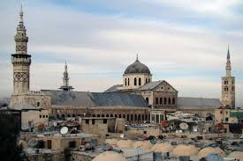

Umayyads of Syria
- After Muawiyah won the civil war, he established the Umayyad dynasty in Syria
- The Umayyad dynasty was based in Syria and their army was mainly Arab and Syrians
- They continued their conquests and took Asia minor (Turkey) and Constantinople from the Byzantines
- They also took Khorasan and Turkistan and northwestern India
- They also spread accross Africa all the way to Spain
- Over the course of Umayyad rule, Syria developed an Arab Muslim character
- They built the Dome of the Rock in Jerusalem and the Great Mosque of Damascus
- Under the Umayyads, Islamic culture began to flourish
- However, Christian culture also remained strong, especially under Umar II
- In 680, at the Battle of Karbala, the Umayyad caliph Yazid I (son of Muawiyah) led an army to defeat and massacre an army led by al-Husayn ibn Ali (son of Ali and grandson of Muhammad)
- However, support for the the family of Ali remained strong
- In 717, the Umayyads began to decline, following the defeat of the Syrian army by the Byzantine emperor Leo III
- The Umayyads were split between two ruling parties: the Arabs of Iraq who disliked the Syrian rulers
- There was also the feud between the mawali (non-Arab Islamic converts) and the Umayyad Arabs
- In 745-746, with the rise of discontent, major revolts began to erupt in Syria, Iraq, and Khorasan
- The mawali then became involved with the Hashimiyyah, a political faction against Umayyad rule
- Finally, in 749, the Hashimiyyah and the western provinces overthrew the Umayyad caliph
- In 750, this established the Abbasid dynasty with the first ruler Abu al-Abbas al-Saffah
- Abu al-Abbas then led a campaign of extermination on the Umayyads and established Abbasid rule in Baghdad
- Dome of the Rock:

- Great Mosque of Damascus:

Sources: [
1
,
2
,
3
,
4
]